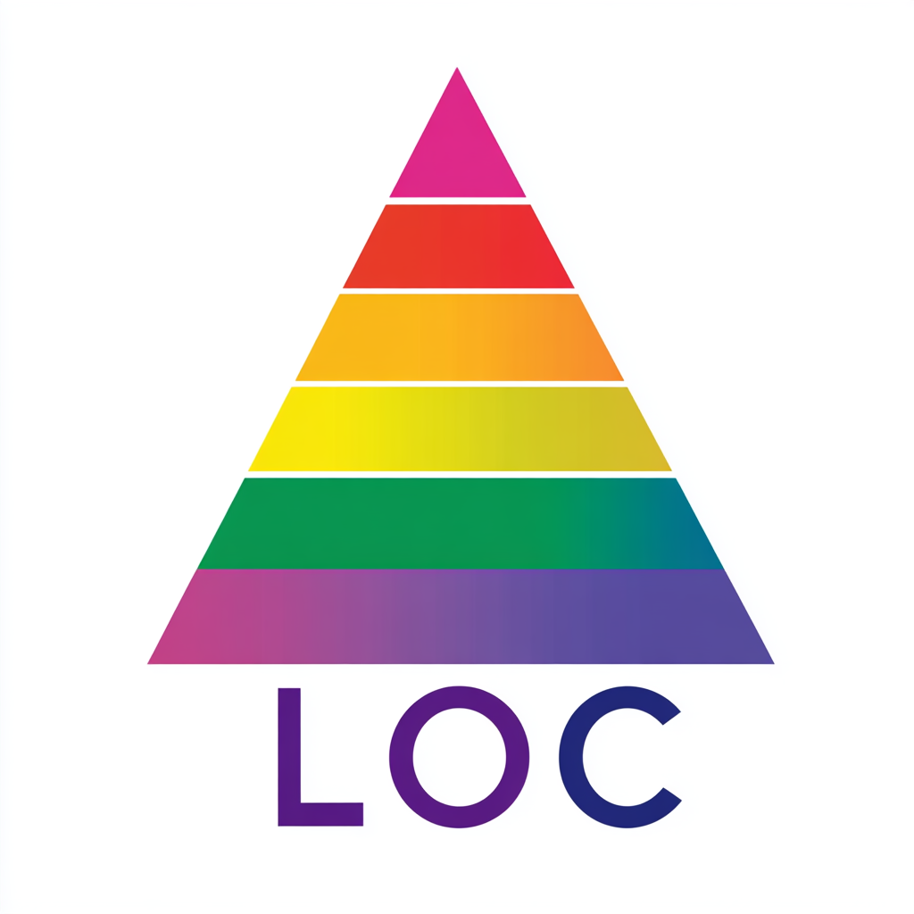

A2.0 Learning Outcomes — Wave Optics: Diffraction, Resolution, Coherence, and Interferometry#
Why this module matters#
In earlier modules we studied ray optics, where light travels along straight-line paths and optical systems can be understood using geometry. While this approximation works extremely well in many situations, it begins to fail when light encounters apertures, edges, or very small structures.
When the wavelength of light becomes comparable to the size of openings or obstacles, light no longer behaves like simple rays. Instead, it spreads, overlaps, and interferes with itself. This behavior is known as wave optics.
Wave optics reveals several profound consequences:
Light passing through an aperture spreads out through diffraction.
Optical instruments cannot achieve unlimited sharpness due to diffraction limits.
Stable interference patterns require a special property of light called coherence.
By carefully controlling interference, scientists can measure extremely small distances using interferometry.
These ideas establish the fundamental limits of optical imaging and measurement. They explain why telescopes must be large to resolve distant objects, why microscopes have finite resolution, and how modern experiments can detect changes in distance smaller than the diameter of a proton.
At the A-level, the emphasis is on:
understanding diffraction as a consequence of wave superposition,
connecting wave behavior to limits of optical systems,
interpreting coherence as the condition required for stable interference,
and recognizing how interferometry enables extremely precise scientific measurements.
This module therefore deepens our understanding of light as a wave and reveals how wave physics governs the ultimate performance of optical instruments.
Learning Outcomes#

By the end of this module, you will be able to:
A. Diffraction from Apertures#
Explains how waves spread when encountering openings or obstacles.
A1. Define diffraction as the spreading of waves after passing through an aperture or around an obstacle.
A2. Explain diffraction qualitatively using Huygens’ principle and wave superposition.
A3. Describe how aperture size relative to wavelength affects the angular spreading of light.
A4. Identify the conditions under which the ray optics approximation breaks down.
A5. Recognize diffraction patterns as the result of interference across a continuous wavefront.
B. Diffraction Patterns and Single-Slit Behavior#
Introduces quantitative descriptions of diffraction.
B1. Identify the key features of a single-slit diffraction pattern, including central and secondary maxima.
B2. State the condition for diffraction minima in a single slit:
B3. Predict how the diffraction pattern changes when slit width or wavelength changes.
B4. Interpret diffraction patterns using physical reasoning rather than memorization.
C. Optical Resolution and the Diffraction Limit#
Shows how diffraction limits imaging systems.
C1. Explain why a point source forms an Airy diffraction pattern when imaged through a circular aperture.
C2. Describe the concept of diffraction-limited imaging.
C3. Identify how aperture size and wavelength affect the angular resolution of an optical system.
C4. Recognize that increasing aperture diameter improves resolution.
D. The Rayleigh Criterion#
Provides a practical rule for resolving two sources.
D1. State the Rayleigh criterion for the resolution of two point sources:
D2. Explain the physical meaning of the Rayleigh condition using overlapping diffraction patterns.
D3. Predict how resolution changes with wavelength and aperture size.
D4. Apply the Rayleigh criterion qualitatively to telescopes, microscopes, and optical instruments.
E. Coherence of Light#
Explains the conditions required for stable interference.
E1. Define coherence as the stability of phase relationships between waves.
E2. Distinguish between temporal coherence and spatial coherence.
E3. Describe how coherence depends on the spectral width and size of a light source.
E4. Explain why lasers produce highly coherent light compared to ordinary light sources.
F. Interferometry#
Uses interference as a precision measurement tool.
F1. Describe the basic operation of an interferometer.
F2. Explain how interference patterns arise when two coherent beams recombine.
F3. Relate shifts in interference fringes to changes in optical path length.
F4. Identify applications of interferometry in precision measurement and scientific research.
F5. Recognize interferometry as a powerful technique for measuring extremely small distances.
Performance Criteria#
Diffraction is understood as a wave phenomenon arising from superposition, not as ray bending.
Students recognize how aperture size and wavelength determine diffraction behavior.
The Rayleigh criterion is interpreted physically rather than memorized as a formula.
Coherence is understood as the requirement for stable interference.
Interferometers are interpreted as devices that translate path differences into measurable fringe shifts.
Connections between wave optics and the limits of real optical systems are clearly articulated.